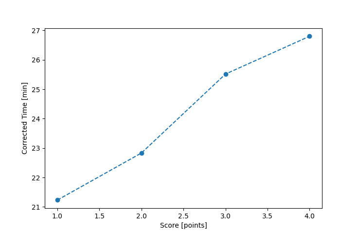

| Wind: | 2-3 (BFT) |
|---|---|
| RC: | Heather_B, Ryan_C |
| Date: | August 18, 2024 |
| Notes: | M1 - Shortened from M2 |
| Rank / Score | Name | Boat | Input Time [mm:ss] | Input Offset [mm:ss] | Race Time [mm:ss] | Race Time [s] | Handicap | Corrected Time [s] | Corrected Time [mm:ss] |
|---|---|---|---|---|---|---|---|---|---|
| 1.0 | Bill_P | SF | 27:19 | 06:00 | 21:19 | 1279 | 1.00400 | 1274 | 21:14 |
| 2.0 | Matt_L | F5 | 28:03 | 06:00 | 22:03 | 1323 | 0.96600 | 1370 | 22:50 |
| 3.0 | Craig_J | SF | 31:37 | 06:00 | 25:37 | 1537 | 1.00400 | 1531 | 25:31 |
| 4.0 | Ian_O | US-1 | 30:28 | 06:00 | 24:28 | 1468 | 0.91300 | 1608 | 26:48 |

Application Notes:
All race results are unofficial
View source code at https://github.com/cessnao3/portsmouthracecalc/